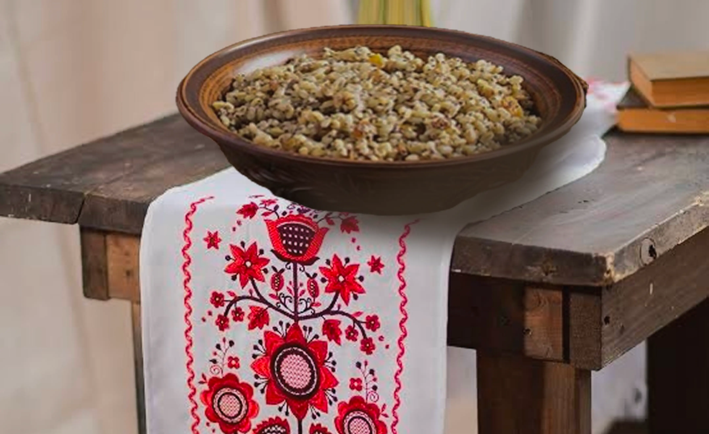
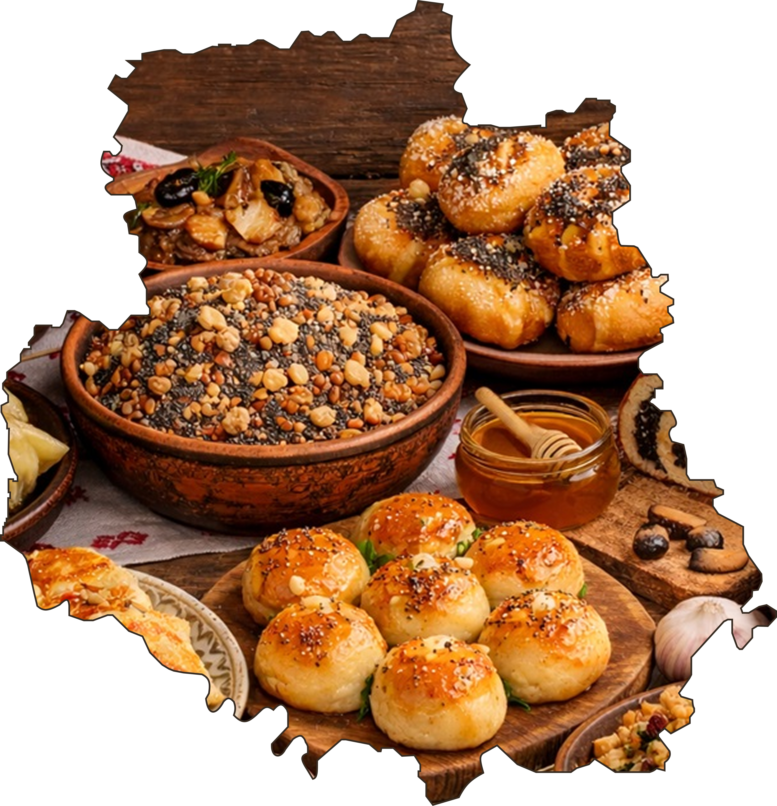

Різдвяні страви Вінниччини
Різдвяна кухня Вінниччини є важливою частиною культурної спадщини Поділля. Святкові страви зберігають родинні традиції, а їхні рецепти передаються від старших поколінь до молодших.
Особливе значення має вечеря напередодні Різдва. За поширеним українським звичаєм на Святвечір готують дванадцять пісних страв. У кожній родині їхній набір може відрізнятися, але головне місце традиційно посідає кутя.
Кутя - головна страва Святвечора
Кутя - традиційна обрядова страва, без якої важко уявити український Святвечір. Найчастіше її готують із вареної пшениці, додаючи мак, мед, горіхи та інші складники відповідно до родинного рецепта.
Зерно символізує життя та відродження, а мед пов'язують із побажаннями добробуту й щасливого життя. Приготування куті є особливим моментом підготовки до Різдва.
На Вінниччині кутя об'єднує за святковим столом усю родину та нагадує про зв'язок поколінь, шанування предків і домашній затишок.

Святкові частування Поділля
Різдвяний стіл на Вінниччині відображає багатство місцевих кулінарних традицій. Окрім куті, до свят готують різноманітні домашні страви та випічку.
На Святвечір родини дотримуються звичаю пісної вечері, а в наступні святкові дні стіл може доповнюватися більш ситними частуваннями. Рецепти залежать від місцевості та сімейних уподобань.
Домашня випічка, страви із зернових культур і святкові наїдки створюють атмосферу гостинності. Вони нагадують, що Різдво — це не лише смачна їжа, а й радість спільного святкування.

Смак Різдва - у родинних традиціях
Кожна родина на Вінниччині має свої улюблені святкові рецепти. Саме завдяки спільному приготуванню страв, сімейним зустрічам і збереженню звичаїв різдвяні традиції продовжують жити й сьогодні.